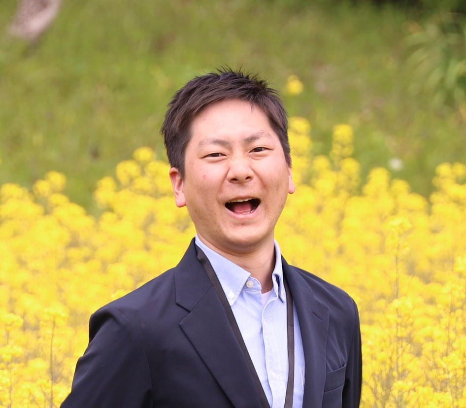
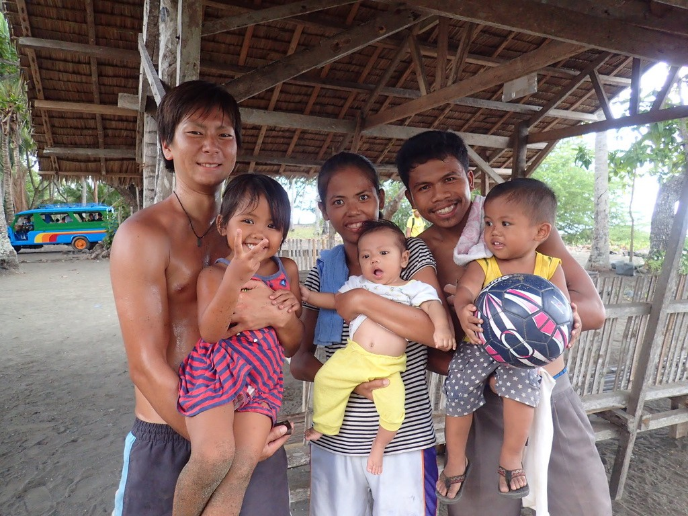
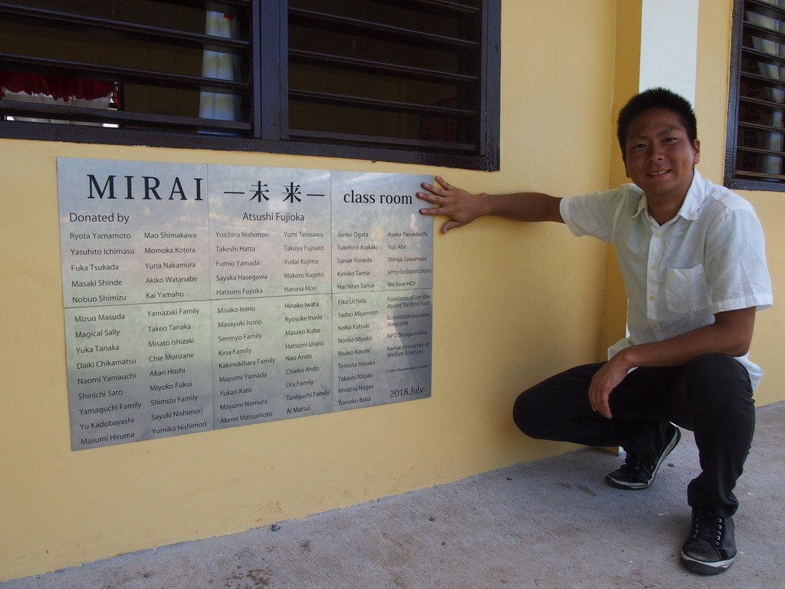
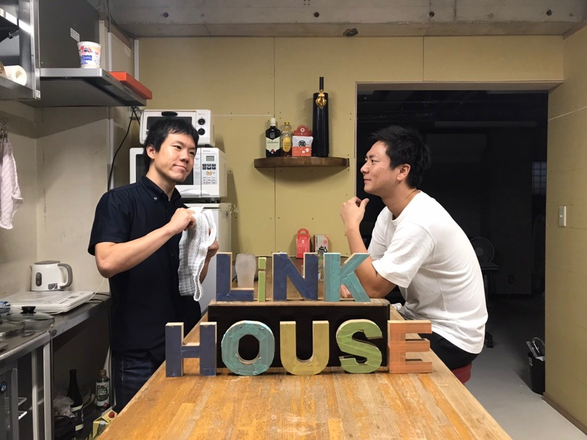

My Story
MEET. LISTEN. BUILD.出会い、聴き、
ともにつくる。
一つの答えを届けるのではなく、現場で出会った人と問いを持ち寄る。その積み重ねが、国境や分野を越えて現在の活動につながっています。

01 / Foundation
人の心と、
暮らしを学ぶ。
大学では臨床心理学を学びました。人の内面だけでなく、その人を取り巻く家族、地域、制度にも目を向けることが、その後の教育・福祉実践の基礎になりました。
経歴を見る →02 / Philippines
知らない世界へ、
自分から入っていく。
フィリピンの教育・福祉の現場では、子ども、家族、学校、地域の人々と時間を重ねました。支援する側／される側という関係を越え、互いに学び合う実践が生まれました。
フィリピンでの活動 →

03 / Development Studies
経験を、
問い直すために。
現場で得た経験を個人の思い出で終わらせず、開発学として学び直しました。フィリピンの学習困難児支援やICT活用を研究発表し、実践と研究の往復を続けています。
研究について →04 / Community
海外での学びを、
日本の地域へ。
帰国後は大学や小中高での教育に加え、津和野を中心に学校と地域をつなぐ活動へ。対話、農林業体験、謎解き、アートなど、参加への入口をいくつもつくっています。
地域づくりを見る →